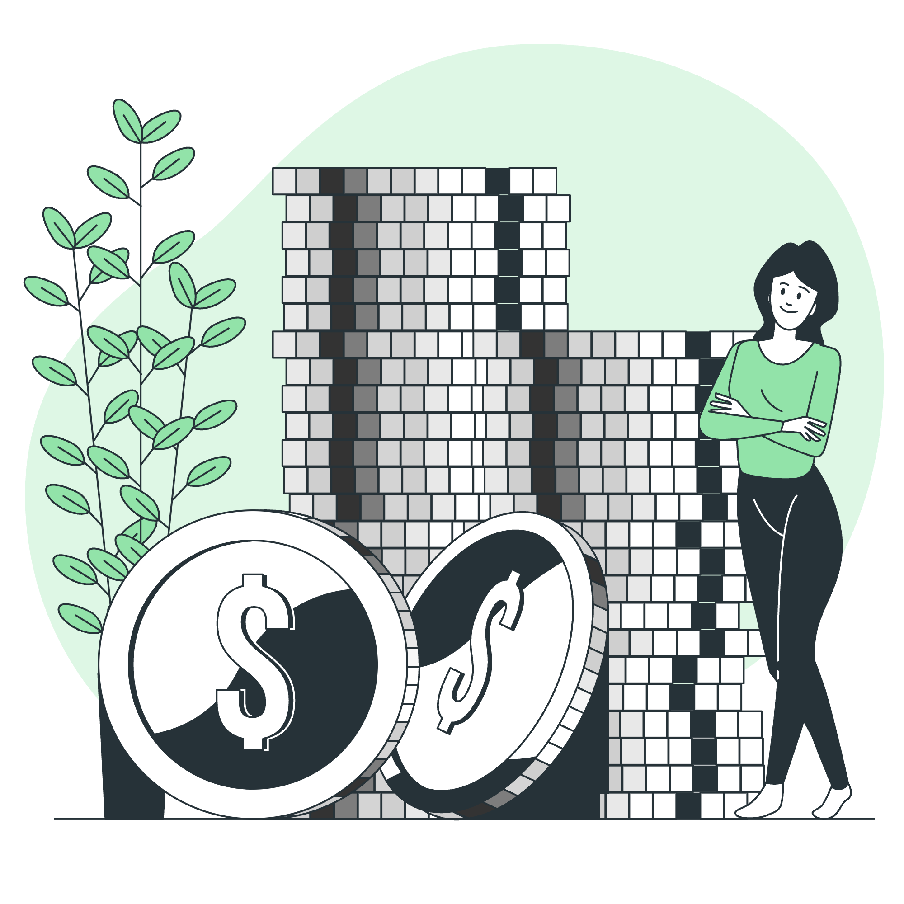

2024-07-15
"돈은 바닷물과 같아서 마시면 마실수록 목이 마르다"
- 정승호, 산문집 「내 인생에 힘이 되어준 한마디」

정승호 작가는 어릴 적 돈이 없어 남에게 돈을 빌리는 어머니의 모습을 보며, 돈이 없으면 비굴해질 수밖에 없다는 사실을 깨달았다고 합니다. 그 경험을 통해 돈의 소중함을 알게 되었고, 돈에 종속되거나 돈의 노예가 되지 않으려면 결국 돈의 주인이 되어야 한다고 말합니다.
돈의 주인이 되는 가장 쉬운 방법은, 돈이 많든 적든 자족하는 것이라고 합니다. 자족할 때 비로소 돈은 우리에게 소중한 자신의 본모습을 보여준다고 합니다.
작가는 여러 사람을 인터뷰하며 "돈은 필요하고 소중한 것이지만, 돈이 사람을 따라와야지 사람이 돈을 따라가면 안 된다"는 말을 자주 들었다고 합니다.
본인 역시 욕망에 따라 더 많은 돈을 벌고 싶고, 때로는 제대로 돈을 벌지 못한 자신의 무능함을 탓하기도 했지만, 그럴 때마다 "부는 바닷물과 같아서 마시면 마실수록 목이 마르다"는 부처님의 말씀을 마음에 새겼다고 합니다.
돈의 노예가 되지 않기 위해, 소유지향적인 삶이 아니라 존재지향적인 삶을 살기 위해 노력한다고 합니다. 자신만을 위해 쓰는 돈은 죽은 돈이고, 남을 위해 쓰는 돈은 생명이 있는 돈이며, 돈은 절대 혼자 찾아오지 않고 탐욕과 근심을 함께 데려온다는 사실도 강조합니다.
이 글은 우리에게 돈의 진정한 의미와 태도를 다시 생각하게 합니다.
돈이 많고 적음이 중요한 것이 아니라, 자족하는 마음과 돈의 주인이 되려는 자세가 더 중요하다는 것을 일깨워줍니다.
돈을 소유의 수단이 아닌, 존재의 가치를 실현하는 도구로 바라보고,
남을 위해 쓰는 돈이야말로 진정한 생명력을 가진다는 사실을 기억해야겠습니다.
돈이 우리 삶을 지배하지 않도록, 탐욕과 근심이 아닌
자족과 나눔의 마음으로 돈을 대하는 지혜가 필요함을 전합니다.